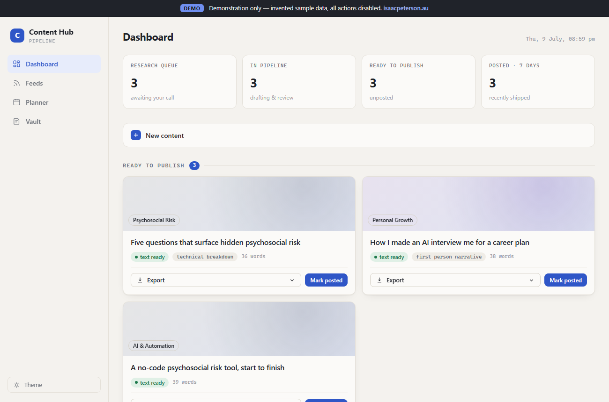

isaacpeterson.au
Quiet and curious.
Fascinated by generative AI and the idea that one person can do it all.
This is where I figure things out in public.

isaacpeterson.au
Fascinated by generative AI and the idea that one person can do it all.
This is where I figure things out in public.
Things I've built and deployed. Tools, experiments, and projects, made with AI.

A demonstration of my AI content pipeline: research queue, drafting stages, planner, and knowledge vault. Sample data only, all actions disabled.
Open demo
A conceptual model for mapping psychosocial risk across organisational, job, and individual dimensions.
Open tool
An interactive guide to navigating the 2024 NSW workers compensation reforms.
Open tool
A national reference directory across all nine Australian jurisdictions for managing psychosocial hazards.
Open tool
An automated local newsletter — researched, written, illustrated and sent by AI. Whale-season events, local history, and a crossword for Hervey Bay, QLD.
Open tool
Isaac Peterson
I'm a New Zealander living in Melbourne, working in personal injury by day. I've always had ideas. What changed is that everything I need to build them is now within reach.
The world is moving faster than most people can keep up with. I'd rather get in front of it than catch up later.
I just have to ask the right questions and learn as I go.
Based in
Melbourne, Australia
Originally from
New Zealand
Building with
Claude, Netlify, GitHub, n8n, Higgsfield, Canva
Last updated
July 2026
Get in touch